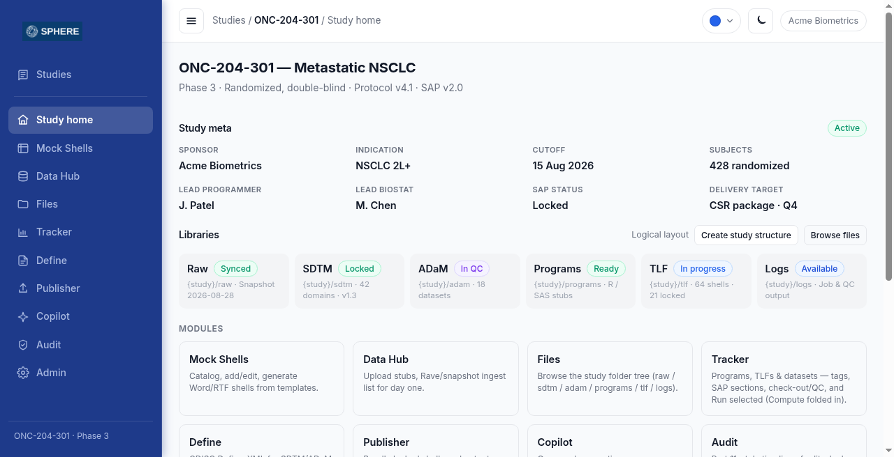
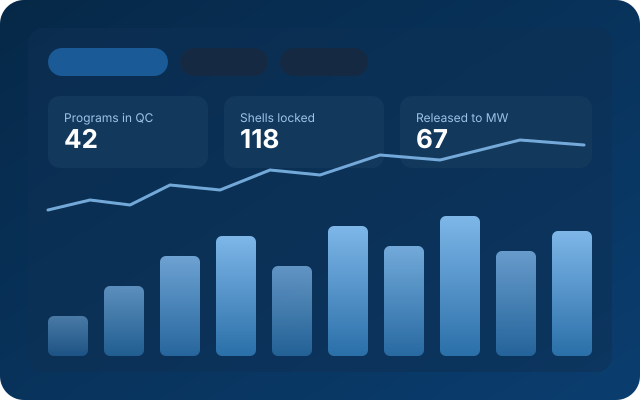

From scattered shells
Mock shells live in Word; post-sign-off changes are hard to spot.
To structured shells — draft, in review, final, locked — with edits blocked after lock.
Clinical study & research ops
SPHERE is the Statistical Programming Hub for Execution and Reporting Environment — a controlled place for biometrics teams to plan outputs, track programs through QC, and deliver packages without spreadsheets or emailed status.

Who it’s for
Pharma, biotech, and CRO biometrics — the people who turn clinical trial data into tables, listings, figures, and datasets under inspection pressure.
Own the study’s programming plan, assign work, and see stage and ownership without a status spreadsheet.
Clear queues of what is waiting for independent QC, with production code read-only and both-run paths when needed.
Agree shells to the SAP, review results, and approve release to medical writing with a full change history.
Lock shells and datasets after sign-off, watch progress by SAP section, and trust the audit timeline.
Know exactly which outputs are released and final — PDF/Word packages in CSR order, not a folder scavenger hunt.
Controlled data landing with checksums, company-wide study layouts, SSO, and module switches — no custom code per customer.
Why teams adopt SPHERE
Shells in Word, trackers in Excel, programs in email, logs on a server — SPHERE puts the operational picture in one place.
Mock shells live in Word; post-sign-off changes are hard to spot.
To structured shells — draft, in review, final, locked — with edits blocked after lock.
Status sheets updated by hand and often stale by the next standup.
To a live tracker — status moves, runs, and role handoffs update the board as work happens.
Nobody is sure who owns QC or statistical review for an output.
To role clarity — production, QC, stats, and medical writing shown on every row; “My assignments” for your queue.
Each study invents its own folder layout; logs are hard to find after a run.
To a company layout — raw · SDTM · ADaM · programs · TLF · logs applied consistently, with runs and logs one click away.
Evidence spread across file servers, email, and spreadsheets.
To one trail — append-only history of shells, workflow, runs, locks, data loads, and assistant suggestions.
Many tools ask companies to ship sensitive trial data to a vendor.
To your environment — SPHERE sits on top of the customer’s SAS, R, and file systems; data stays under their IT control.
Built for the way biometrics works
SPHERE sits where programmers, QC, biostatistics, and medical writing already hand work off — so ownership, stage, and audit trail live next to the study instead of in email threads.
Capabilities
Sign-in, studies, folder layout, and audit are always on. Adopt Mock Shells first, then Tracker, runs, Define, and packages — each useful alone, better together.
Protocol metadata, sponsor, cutoff, subjects, SAP status, and delivery targets share one operational picture. Library status across Raw · SDTM · ADaM · Programs · TLF · Logs, plus module entry points — so programmers, leads, and reviewers align without status meetings.
Build and edit table, listing, and figure shells as a structured sheet: titles, columns, rows, footnotes, analysis sets, and SAP section. Status moves Draft → In review → Final → Locked. Locked shells cannot be changed. Generate Word/RTF with programming notes; send Final shells to Tracker.
Every table, listing, figure, and dataset tracked with program, owner, status, shell, and job state. Group by analysis area; filter by type, status, tags, and SAP section. Bulk handoffs and runs. Program headers and QC names generated from shell metadata — no retyping drift.
Start SAS and R jobs from the Tracker against the customer’s own compute. Watch queue progress, open logs in one click, and keep editable stages separate from read-only review stages — editability follows workflow stage, not check-out theater.
Browse the study folder tree with folder-level access that inherits down the tree. Manual uploads and data-cut snapshots land in raw with checksums and history — so data managers and programmers share one controlled landing zone.
Assemble PDF and Word packages of locked shells and outputs with a table of contents for CSR or DMC. Draft Define-XML 2.0/2.1 for SDTM/ADaM with human review before release — submission-minded without guessing.
Context-aware suggestions for TLF assist, log QC, and mapping — draft only. Copilot never locks, runs, or publishes. Every accept or reject is audited so a person always stays in control.
Modules on/off, branding, SSO, connectors (settings), Tracker workflow, version control, users and teams, study layout, and compliance preferences — one product configured, never a custom code base per customer.

Operational clarity
Leads see progress by SAP section. Individuals open their assignment queue. Status moves with the work — not a weekly spreadsheet refresh.
Study delivery
Humans decide; the system records. Workflow stages make editability and next actions obvious.
Final mock shells seed Tracker records. Titles, analysis sets, SAP sections, and footnotes become the source of truth for program headers and QC naming — generate, don’t retype.
Production, QC, stats, and medical writing assignments sit beside status and job state. Leads see progress by SAP section; individuals open “My assignments” for their queue.
When something fails QC or stats, the row returns to a revise stage where edits are allowed again — with history of who moved it, when, and why, instead of a silent overwrite.
Locked shells and released outputs assemble into PDF/Word packages with a table of contents. Define drafts support SDTM/ADaM review before anything ships to submission teams.
Compliance & audit
SPHERE is built so validation and quality teams can follow every material decision — without reconstructing history from email.
Creates, edits, locks, generates, workflow moves, runs, data loads, and Copilot decisions land in a searchable, exportable timeline. Tamper-evident history supports inspections and customer validation evidence.
How it works
Five clear steps — the same rhythm serious biometrics teams already know.
Create the study from the company layout. Capture protocol, SAP, sponsor, cutoff, and library baselines on Study home.
Build mock shells by SAP section, align with biostatistics, move to Final, and lock when agreed.
Send shells to Tracker, assign roles, develop and run SAS/R, and move work through QC and stats review.
Release outputs to medical writing. Assemble CSR or DMC packages and Define drafts in the same study context.
Export the audit trail. Show who locked, who approved, who ran what, and which suggestion was accepted or rejected.
Product principles
The rules behind the interface — so adoption can be gradual and validation can be serious.
Request a walkthrough tailored to biometrics workflows — study home, shells, tracker, and audit with your process in mind.
Request a demoSerious booth conversation. No invented case studies.